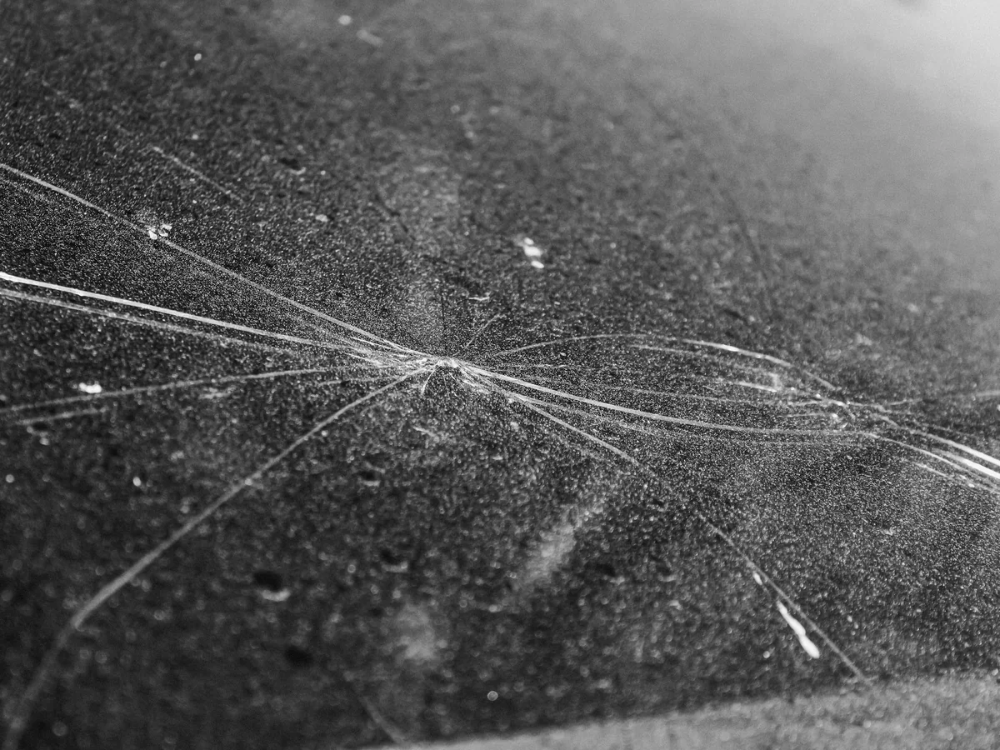
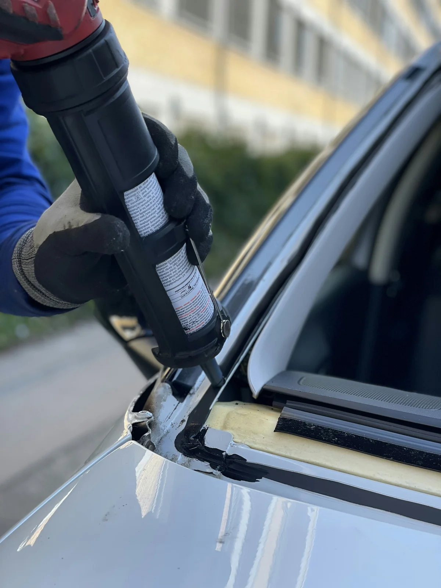

01 / AUTO GLASS CARE
Windshield repair
Small chip? Start here. Learn what makes damage a possible candidate for repair.
Explore repairChipped windshield? Cracked glass? Get straightforward help with windshield repair and replacement, right here in Sarnia.
Find the service that fits your situation, then connect with the shop for a personal assessment.

Small chip? Start here. Learn what makes damage a possible candidate for repair.
Explore repair
For damaged glass that needs a fresh start. Find out what to expect from replacement.
Explore replacement
Broken door or rear window? Get help identifying the right replacement glass.
Explore auto glassTell us what you’re seeing. We’ll point you toward the information that helps.
A starting guide only. The shop will need to assess your glass before recommending a service.
The size, depth and position of the damage matter. Arrange an assessment to find out whether a repair is suitable for your windshield.
Explore chip repairShare your vehicle details and describe the damaged glass. A photo can help.
Discuss the assessment, glass requirements, pricing and appointment availability.
Confirm the details with the shop and get clear instructions for the next step.

Auto glass damage can interrupt your day. Getting help shouldn’t make it harder.
Looking for windshield repair or auto glass replacement in Sarnia? Start with Windshield Doctor Auto Glass on Vidal Street South.
523 Vidal Street SouthCall ahead for hours, glass availability and appointments.
Some small chips can be repaired. The location, depth, size and condition of the damage all matter. A glass assessment is needed to confirm whether repair is appropriate or replacement is recommended.
Pricing depends on your vehicle, the glass required and the type of damage. Features such as cameras, sensors, heating elements and special glass can affect the quote. Send your vehicle’s year, make and model to get started.
Please call or email before visiting so the shop can confirm availability, the glass you need and the next steps. An email request does not confirm an appointment.
Coverage depends on your policy, deductible and insurer. Check with your insurer and ask the shop about payment and claim arrangements before authorizing work. Coverage and direct billing are not guaranteed.
Tell us about your glass. We’ll help with the next step.